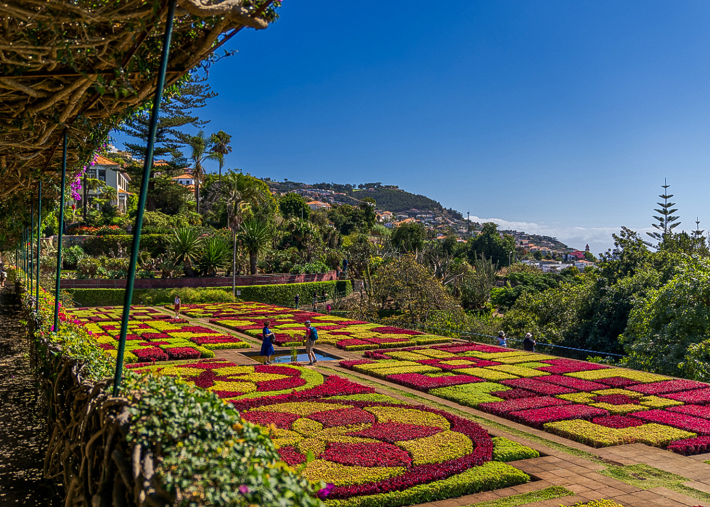

Meu Roteiro de Viagens
Atividades Planejadas

Mercado dos Lavradores
Data: 10/01/2026 | Horário: 09:00 - 11:00
Local: Funchal | Duração: 2h

Teleférico do Funchal
Data: 10/01/2026 | Horário: 12:00 - 13:00
Local: Funchal | Duração: 1h

Jardim Botânico
Data: 11/01/2026 | Horário: 10:00 - 12:00
Local: Funchal | Duração: 2h
Atividades Concluídas

Porto Santo - Praia Dourada
Data: 05/01/2026 | Horário: 09:00 - 17:00
Local: Porto Santo | Duração: 8h